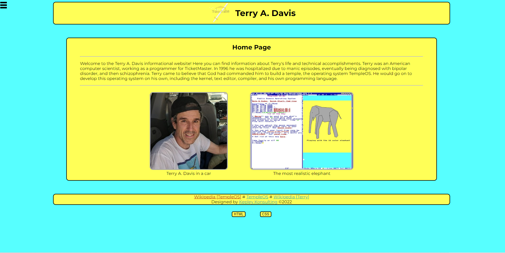
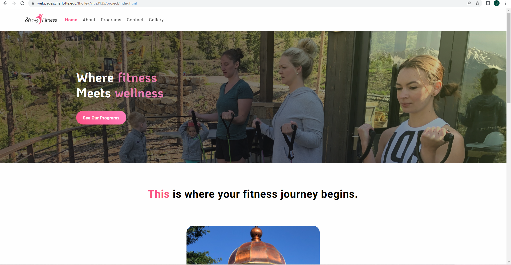

Seth LaMay's Peer Review
Review Number 1
The person I am reviewing is Hunter, Kepley
- Style I would say the nav bar looks really good but the color scheme is very jarring to the eyes. Also the validation buttons are kinda small.
- Validation: Has validation buttons and the site is val;id with no CSS or HTML errors.
- Content: Content seems good and works well togther. The entire site matches which is good.
- Fucntions: The form seems to work as expected as well as the gallery which is a plus.
- Links: All links seem to be working.
- Top Logo: I think the top logo is kinda faded and doesnt contrast very well on the yellow background so maybe consider changing one of the two.
- Favacon: There is no current favacon but the page title is correct.
- Overall Feel: I think that the page is very smooth and functions well. Accessibility wise the page is very harsh on the eyes because of the color scheme but if you change that I think that the page is in really good shape.
Review Number 2
The person I am reviewing is Tyler, Holly
- Style Well sytle on this page is a 10 out of 10 I mean it honselty looks like a real website.
- Validation: No validation buttons so I have no idea if the page validate.
- Content: Content is exellent and is very clear and to the point. Information is displayed in a meaning way and easy to access.
- Fucntions: all of the functions do work but the gallery loads very very slow which is not great.
- Links: All links seem to be working.
- Top Logo: the logo looks really good and fits the site perfectly.
- Favacon: Theres is currently no favacon for the site so it would be nice to seen one.
- Overall Feel: I think that the overall feel of the page is very very good and looks incredible. You have a few things here and there to adress but once those are fixed I think its an awesome website.